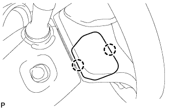
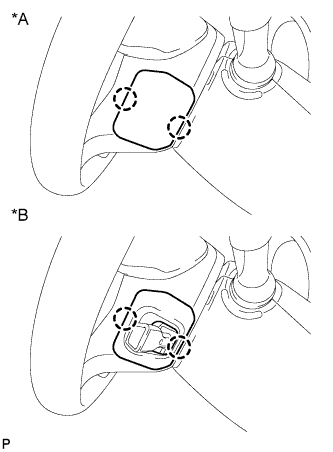
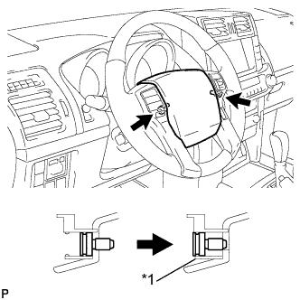
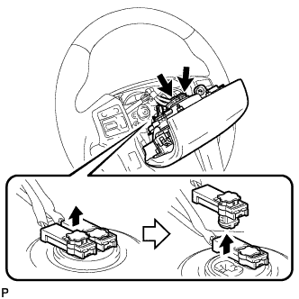

НАКЛАДКА РУЛЕВОГО КОЛЕСА > СНЯТИЕ |
| 1. ОТСОЕДИНИТЕ ПРОВОД ОТ ОТРИЦАТЕЛЬНОГО ВЫВОДА АККУМУЛЯТОРНОЙ БАТАРЕИ |
| 2. СНИМИТЕ НИЖНЮЮ КРЫШКУ РУЛЕВОГО КОЛЕСА № 3 |
|  |
Отцепите 2 захвата и снимите обивку.
| 3. СНИМИТЕ НИЖНЮЮ КРЫШКУ РУЛЕВОГО КОЛЕСА № 2 |
|  |
Отцепите 2 захвата и снимите накладку.
| *A | Для моделей без системы круиз-контроля |
| *B | Для моделей с системой круиз-контроля |
| 4. СНИМИТЕ НАКЛАДКУ РУЛЕВОГО КОЛЕСА |
|  |
С помощью торцевого ключа "TORX" T30 ослабьте затяжку 2 винтов так, чтобы канавка вдоль окружности винта вошла в корпус с резьбой.
| *1 | Корпус с резьбой |
|  |
Вытяните накладку рулевого колеса из рулевого колеса, как показано на рисунке. Одной рукой придерживайте накладку рулевого колеса.
Отсоедините разъем звукового сигнала.
Отсоедините 2 разъема и снимите накладку рулевого колеса.